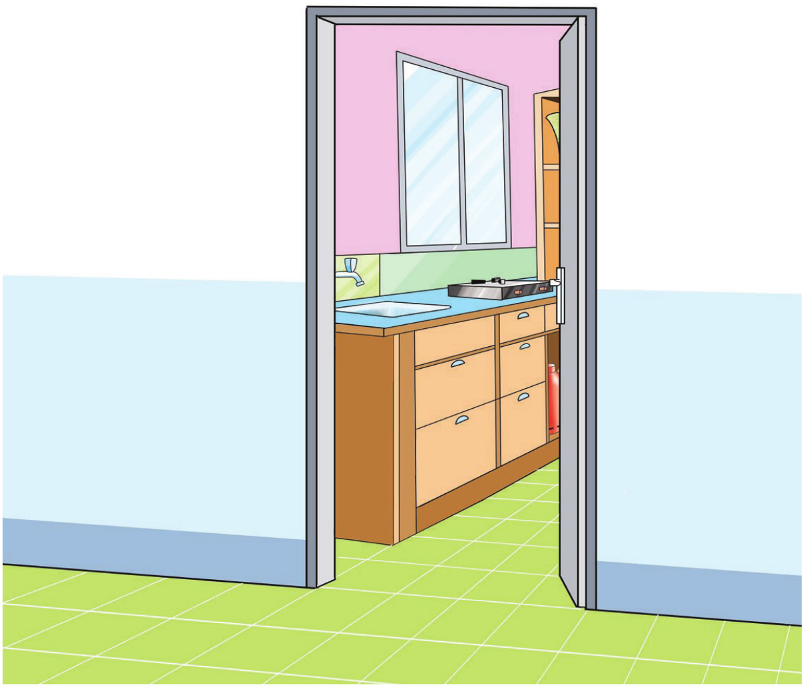

Characteristics of a good kitchen
A good kitchen has several key qualities that make it efficient, functional and enjoyable to work in. The following are qualities of a good kitchen:
(i)
The kitchen which is positioned in the manner that allows enough sunlight and air to enter.
(ii)
Kitchen walls furnished with smooth and easy-to-clean material. Colours in the kitchen walls, including the ceiling should be bright to reflect light in the room.
(iii)
The kitchen floor made up of non-slippery materials that are easy to clean such as cement and tiles.
30